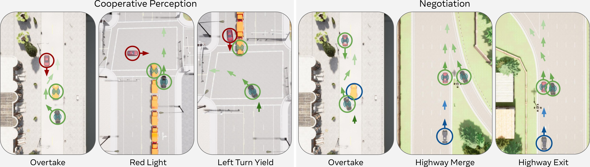

Abstract
Past work has demonstrated that autonomous vehicles can drive more safely if they communicate with one another than if they do not. However, their communication has often not been human-understandable. Using natural language as a vehicle-to-vehicle (V2V) communication protocol offers the potential for autonomous vehicles to drive cooperatively not only with each other but also with human drivers. In this work, we propose a suite of traffic tasks in autonomous driving where vehicles in a traffic scenario need to communicate in natural language to facilitate coordination in order to avoid an imminent collision and/or support efficient traffic flow. To this end, this paper introduces a novel method, LLM+Debrief, to learn a message generation and high-level decision-making policy for autonomous vehicles through multi-agent discussion. To evaluate LLM agents for driving, we developed a gym-like simulation environment that contains a range of driving scenarios. Our experimental results demonstrate that LLM+Debrief is more effective at generating meaningful and human-understandable natural language messages to facilitate cooperation and coordination than a zero-shot LLM agent.
TalkingVehiclesGym
TalkingVehiclesGym is a multi-agent gymnasium simulation environment for the closed-loop evaluation of urban driving policies. It is designed to evaluate the performance of multi-agent communication and collaboration for an array of cooperative driving tasks. TalkingVehiclesGym supports in-episode communication in among autonomous agents through MQTT.

LLM+Debrief Learn to Collaborate using Natural Language via Self-Play
We ask the key research question that whether the current LLM agents are able to coordination well in the driving task without pre-coordination, and whether their cooperation capability could be improved over interactions. We start from building an agent that only rely on Chain-of-Thought, gradually extending to self-reflections and centralized discussions (LLM+Debrief) to create knowledge for future driving and collaborations.

Agent Policy
The agent's probability distribution among actions is decided by an LLM with a prompt that contains the observations, tasks, traffic rules, received messages from other vehicles, and other important information for driving. The agent output must be in the json format that decides a command and/or a message to send.
-
In-Context Knowledge
Since the language models are auto-regressive, the probability of taking action is affected by the context provided to the agents. Thus, we can augment the prompt with the prior knowledge to alter the policy.
-
Chain-of-Thought Reasoning
We prompt the agent to reason about its surrounding and possible consequence of each action first, then then serve the output reasoning as a part of the prompt for final decisions.
Agent Learning
Initially, the LLM agents interact with each other in the scenarios and store their experience in the relay buffer. The agents then enage in a discussion session where they sample past experience as a context to refine their joint cooperative strategy.
-
Replay Buffer
We store the transition data (observations, actions, next observations) in a replay buffer. When an episode concludes, the environment will each agent's performance and provide scalar rewards, as well as verbal feedbacks like "Vehicle 109 collided with Vehicle 110 after 2 seconds" or "Vehicle 111 stagnated for too long to complete its task." Each transition data is retrospectively labeled with enriched meta data, including responses from other agents, collision details, stagnaition specifics and final outcomes.
-
Batch Sampling
While analyzing the entire trajectory would provide a comprehensive understanding of failure cases, computational constraints necessitate sampling a subset (batch) of keyframes from its replay buffer. To prioritize relevant data, the sampling process heuristically assigns higher probabilities to transitions that occur immediately before collisions, involve actions contributing to collisions, or lead to stagnation due to agents slowing down. Additionally, transitions that feature more intensive multi-agent interactions are given more weight.
-
Debrief
A debriefing session begins when an episode concludes in failure (collision or stagnation) and is conducted in a turn-based manner over N rounds, with a focus on improving cooperation in future interactions. The speaking order is deterministic in this work for each session, and agents take turns speaking in a round-robin format. The agent chosen to speak first is responsible for proposing a joint cooperative strategy for everyone participating in the debriefing (the focal group). This agent begins by reasoning through its transition data batch, analyzing the consequences and influence on other agents of its actions, and formulating a proposed strategy. Subsequently, the other agents take turns sharing their perspectives, providing feedback, or offering alternative insights based on their analysis of their own experience batch. After the discussion, each agent summarizes the discussion to develop individual cooperative strategies and knowledge. These outcomes serve as in-context guidelines for future driving tasks. This joint discussion for future individual decision-making structure mirrors the principles of the Centralized Training Decentralized Execution (CTDE) framework.
Experiments
We established several baselines and scenarios to answer the research questions:
- Zero-shot: an LLM agent using Chain-of-Thought (CoT) reasoning only.
- Reflection: an LLM agent with CoT reasoning contextualized with knowledge from decentralized reflection.
- Correction+RAG: an LLM agent that corrects past actions via self-reflection, stores these corrections in a vector-based retrievable memory, and uses few-shot retrieved-example augmented generation.
- Correction+RAG (Silent): the retrieval-augmented method without communication (adapting DiLU, a non-communicating single-agent LLM-based reflection-driving approach, to our environment).
- Correction+RAG (Comm): the multi-agent communication extension of DiLU (AgentsCoDriver), which resembles Correction+RAG but does not actively optimize the messages.
For a fair comparison across these LLM-based baselines, we did not initialize any knowledge with human data, nor was there human involvement during the learning process.

Qualitative Videos
Scenario 1: Perception Overtake
Scenario 2: Perception Red Light
Scenario 3: Perception Left Turn
Scenario 4: Negotiation Overtake
Scenario 5: Negotiation Highway Merge
Scenario 6: Negotiation Highway Exit
Example Learned Knowledge
Perception Overtake
Car1 (Overtaking)
In our refined cooperative strategy, the stationary vehicle in lane 1 will continuously monitor lane -1 for any approaching traffic and provide real-time alerts. Meanwhile, the overtaking vehicle will actively use its sensors to independently verify the status of lane -1. If both the stationary vehicle's observations and the overtaking vehicle's sensors confirm that lane -1 is clear, the overtaking vehicle will promptly proceed with the maneuver to avoid stagnation. If the stationary vehicle detects any traffic in lane -1, it will immediately communicate this, advising the overtaking vehicle to hold its position. The overtaking vehicle will remain ready to accelerate smoothly once the lane is confirmed clear. This dual-verification approach, combining sensor data and real-time communication, ensures a timely and safe overtaking maneuver, preventing collisions and minimizing stagnation.
Perception Red Light
…learned knowledge for Perception Red Light…
Perception Left Turn
…learned knowledge for Perception Left Turn…
Negotiation Overtake
…learned knowledge for Negotiation Overtake…
Negotiation Highway Merge
…learned knowledge for Negotiation Hwy Merge…
Negotiation Highway Exit
…learned knowledge for Negotiation Hwy Exit…
Distillation and Generalization
We perform full-parameter fine-tuning of a compact language model (DistilGPT2 Sanh et al., 2019) to directly imitate the behavior of our large, memory-augmented LLM+Debrief agent. To build the imitation dataset, we collect every successful evaluation episode across all six scenarios and record the large agent’s token-level outputs. The distillation model is then trained to minimize cross-entropy loss against those outputs. At inference time, it generates decisions via random sampling with a temperature of 0.2.
Each policy is evaluated with three random seeds (30 episodes per seed). We report the mean and ±1 SEM across seeds. Debrief (per-scenario) is an oracle baseline learned individually per scenario.
| Method | Overtake (Perception) | Red Light | Left Turn | |||
|---|---|---|---|---|---|---|
| CR (%) ↓ | SR (%) ↑ | CR (%) ↓ | SR (%) ↑ | CR (%) ↓ | SR (%) ↑ | |
| Debrief (per-scenario) | 1.1 ± 1.1 | 98.9 ± 1.1 | 0.0 ± 0.0 | 96.7 ± 0.0 | 4.4 ± 2.9 | 94.4 ± 2.2 |
| Centralized Memory | 2.2 ± 1.1 | 93.3 ± 1.9 | 0.0 ± 0.0 | 100.0 ± 0.0 | 4.4 ± 2.9 | 93.3 ± 3.3 |
| Distillation | 0.0 ± 0.0 | 83.3 ± 1.9 | 0.0 ± 0.0 | 91.1 ± 4.4 | 0.0 ± 0.0 | 96.7 ± 0.0 |
| Method | Overtake (Negotiation) | Highway Merge | Highway Exit | |||
| CR (%) ↓ | SR (%) ↑ | CR (%) ↓ | SR (%) ↑ | CR (%) ↓ | SR (%) ↑ | |
| Debrief (per-scenario) | 10.0 ± 3.8 | 87.2 ± 3.9 | 2.2 ± 2.2 | 97.8 ± 2.2 | 13.3 ± 6.0 | 86.7 ± 6.0 |
| Centralized Memory | 12.2 ± 2.9 | 86.7 ± 1.9 | 1.1 ± 1.1 | 98.9 ± 1.1 | 16.1 ± 4.8 | 82.8 ± 5.3 |
| Distillation | 10.0 ± 3.3 | 88.9 ± 4.4 | 0.0 ± 0.0 | 100.0 ± 0.0 | 3.3 ± 0.0 | 96.7 ± 0.0 |
Decision Latency & Message Size (Distilled LLM Policy)
| Latency / Scenario | Overtake | Left Turn | Red Light | Overtake | Highway Merge | Highway Exit |
|---|---|---|---|---|---|---|
| Decision Latency (s) | 0.45 | 0.44 | 0.38 | 0.14 | 0.19 | 0.20 |
| Message Size (bytes) | 223.3 | 297.9 | 223.0 | 28.0 | 59.0 | 59.0 |
Future Work
Talking Vehicles is a promising step towards AI agents that can purposefully communicate with each other and humans in a natural language to coordinate on a task via self-play among agents. Future work will be directed towards creating more robust and diverse learned policies to enable ad hoc teamwork, integrating larger multimodal models, and studying the learning methods that can train the agents to perform more complex tasks.
BibTeX
@article{cui2025talking,
title={Talking Vehicles: Towards Natural Language Communication for Cooperative Autonomous Driving via Self-Play},
author={Jiaxun Cui and Chen Tang and Jarrett Holtz and Janice Nguyen and Alessandro G. Allievi and Hang Qiu and Peter Stone},
year={2025},
eprint={TODO},
archivePrefix={arXiv},
primaryClass={TODO}
}